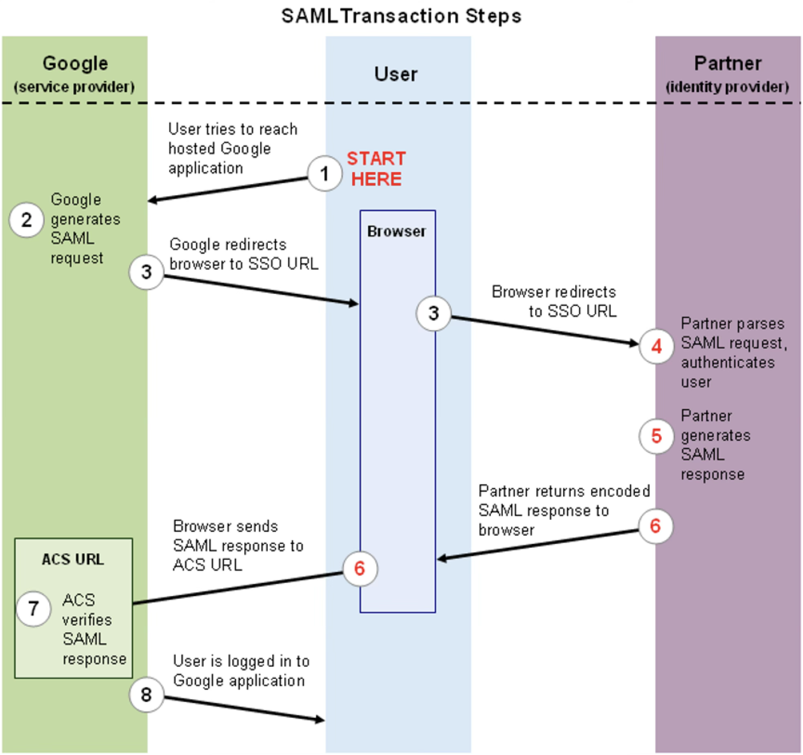

Inloggen#
Het proces van inloggen is het proces waarmee de gebruiker zich authenticeerd bij de webapplicatie. Klassiek worden hiervoor wachtwoorden gebruikt; de gedachte is dat alleen de gebruiker zelf en de webapplicatie dit wachtwoord kennen, dus als een gebruiker het kan geven, kan de webapplicatie ervan uitgaan dat dit inderdaad de juiste gebruiker is en kan deze geauthenticeerd worden.
Dit is in theorie juist, maar in de praktijk blijkt dit niet zo te zijn. Idealiter zijn wachtwoorden uniek, complex en lang, zodat ze niet eenvoudig te raden zijn. In de praktijk echter zijn complexe strings moeilijk te onthouden voor de gebruiker, waardoor gebruikers er vaak voor kiezen om eenvoudige of korte wachtwoorden te gebruiken die bovendien vaak hergebruikt worden voor verschillende applicaties. Bovendien kiezen veel gebruikers ervoor om betekenisvolle wachtwoorden te gebruiken, zoals geboortedata, namen van kinderen of namen van huisdieren, waardoor deze soms relatief eenvoudig te raden zijn.
Daarnaast speelt dat door het vaak eenvoudiger is om door middel van phishing gebruikers hun wachtwoord te ontfutselen dan om de daadwerkelijke beveiliging van de webapplicatie te kraken. Dit alles leidt tot de conclusie dat voor een moderne webapplicatie een wachtwoord alleen feitelijk niet voldoende beveiliging biedt. Vanwege het proof-of-concept-karakter van het framework dat we hier bespreken, geldt deze opmerking in deze context niet, maar voor de volledigheid zullen hier toch een aantal methodes besproken worden die het authenticeren betrouwbaarder kunnen maken.
Multifactorauthenticatie#
Een veel gebruikte manier om inloggen te beveiligen is het gebruik van multifactorauthenticatie. Hierbij wordt niet slechts een wachtwoord gevraagd, maar worden meer factoren gevraagd. Een factor is een enkelvoudige manier om een gebruiker te identificeren. De klassieke drie factoren zijn
iets wat een gebruiker weet, zoals bijvoorbeeld een wachtwoord of een pincode,
iets wat een gebruiker heeft, zoals een sleutel of een beveiligingstoken, en
iets wat een gebruiker is, een eigenschap van de gebruiker, zoals een vingerafdruk of retinascan.
Daarnaast worden ook locatie en tijdstip wel gebruikt als factoren. Multifactorauthenticatie bestaat er nu uit om ten minste twee verschillende factoren te vereisen. Alleen een wachtwoord is dus onvoldoende, want dat is alleen de factor “iets wat een gebruiker weet”, maar ook een wachtwoord in combinatie met beveilingsvragen, bijvoorbeeld naar de naam van het eerste huisdier, is onvoldoende aangezien dat twee keer dezelfde factor is.
In de praktijk wordt vaak een mobiel device als tweede factor gebruikt. Voorheen werden hier wel SMS-codes voor gebruikt, maar het SMS-protocol is niet veilig genoeg om dit als veilige oplossing te zien. In plaats daarvan wordt veelal gewerkt met time-based one-time passwords (TOTP), waarbij een seedwaarde wordt opgeslagen in een mobiele app en op de webserver, en deze seed cryptografisch wordt gecombineerd met de huidige tijd om een code te genereren dat elke zoveel seconden verandert. De gebruiker geeft deze code mee bij het inloggen, waarop de server de berekening ook kan uitvoeren om te controleren of de code correct is.
Passkeys#
Ook met multifactorauthenticatie blijven wachtwoorden relatief gevoelig voor phishing. Een manier om dit probleem te verhelpen is door gebruik te maken van WebAuthn; de hierbij behorende credentials worden meestal passkeys genoemd. Passkeys werken op basis van assymetrische cryptografie. Hierbij wordt door de client een paar sleutels gemaakt, een publieke en een private. De private sleutel wordt geheim gehouden door de client, maar de server waarbij de client wil authenticeren krijgt wel de beschikking over de publieke sleutel.
Als de gebruiker nu wil inloggen, krijgt de client een challenge, een willekeurige waarde, van de server. De client tekent deze met zijn private sleutel. De server kan deze handtekening controleren met de publieke sleutel van de gebruiker, en als deze klopt, weet de server dat het inderdaad de bedoelde gebruiker was die probeert in te loggen.
Om te voorkomen dat de private sleutel van de gebruiker uitlekt, wordt deze waar mogelijk in afgeschermd geheugen opgeslagen, zoals bijvoorbeeld in de Secure Enclave op Apple-devices. Bovendien wordt de private sleutel nooit verstuurd, maar alleen gebruikt om een challenge te tekenen. Om te voorkomen dat een derde partij het device van de gebruiker gebruikt om in te loggen, wordt vaak de op bijvoorbeeld telefoons aanwezige biometrische authenticatie gebruikt.
Passkeys kunnen alleen via de Web Authentication API worden gebruikt; het is dus noodzakelijk om JavaScript te gebruiken om hiervan gebruik te maken. Het gebruik van passkeys valt daarom buiten de scope van dit vak.
Identity federation#
In de offline-wereld is het niet gebruikelijk dat organisaties zelf het authenticeren van hun bezoekers en medewerkers regelen. Dit gebeurt in grote lijnen alleen binnen bedrijven, waar medewerkers vaak een medewerkerskaart hebben, en bijvoorbeeld in ziekenhuizen waar patiënten een armbandje met persoonsgegevens hebben. Om bezoekers te authenticeren wordt meestal om een door de overheid uitgegeven identiteitsbewijs gevraagd; in Nederland gaat het dan om paspoorten, identiteitskaarten en rijbewijzen. Wat er dus feitelijk gebeurt is dat de authenticatie wordt uitbesteed aan de overheid. De overheid verstrekt aan personen een identiteitsbewijs dat door anderen wordt vertrouwd, omdat men erop vertrouwd dat de overheid de procedures op orde heeft en geen identiteitsbewijzen verstrekt aan de verkeerde persoon.
Ook online kan een dergelijke procedure worden gevolgd. Dit wordt identity federation genoemd. Meestal krijgt de gebruiker bij het inloggen bij een webapplicatie de keuze om in te loggen via een derde partij, bijvoorbeeld Apple, Meta of Google, waarop die derde partij de gebruiker een token verschaft dat gebruikt kan worden om in te loggen in de oorspronkelijke website. Dit token is cryptografisch ondertekend door de identiteitsverstrekkende partij en dient als bewijs dat de gebruiker inderdaad is wie die zegt. De website waarop ingelogd wordt, vertrouwd er dan op dat de verstrekkende partij geen ongeldige tokens uitgeeft.
Voorbeelden van protocollen voor identity federation zijn SAML en OAuth. Hieronder is een voorbeeld te zien van de flow van een inlogprocedure met SAML. In dit voorbeeld is de website waarop ingelogd gehost bij Google, links in de afbeelding, en wordt de identiteit gecontroleerd door de partner, rechts in de afbeelding. Dit zou bijvoorbeeld een Active Directory-server kunnen zijn van een bedrijf, waardoor de identiteit door dat bedrijf gecontroleerd wordt. Uit de afbeelding blijkt dat de identiteitsprovider en de website bij het inloggen niet met elkaar communiceren; het kan dus best zo zijn dat de identiteitsprovider alleen via een intranet te bereiken is. Het is wel nodig dat deze partijen cryptografische sleutels met elkaar uitwisselen zodat ze elkaars tokens kunnen vertrouwen, maar dit kan offline gebeuren als onderdeel van het configuratieproces van de identity federation.
